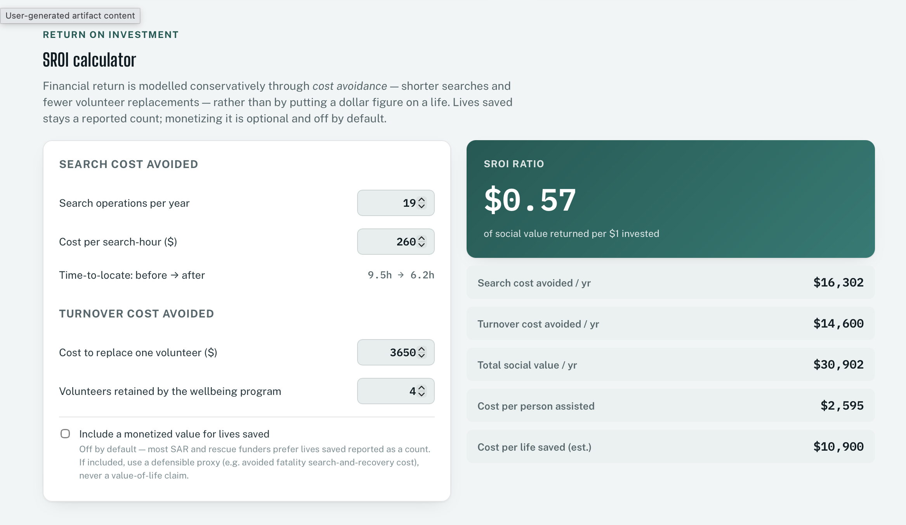

NSAR needed more funding — but had no evidence its programs were working, and no case to ask for it.
This is a Product Strategy Org Building problem.
Academic strategic analysis project with the NSAR Project Team, University of Strathclyde (Oct–Dec 2024), scoped around Nunavut Search and Rescue's real funding and evaluation problem. No NSAR operational data was available to the project team — every figure on this page and in the linked prototype is a clearly-flagged sample, not a measured result.
NSAR runs Arctic search-and-rescue on grants and volunteer hours, and had already made real interventions with them — new GPS units, joint training with partner agencies, a mental-health and wellbeing program for volunteers. Leadership believed these were working, from what search leads reported informally. But belief isn't a funding case, and NSAR had never connected a dollar of past funding to a measured result — so when it needed to ask funders for more, there was nothing to point to. The real finding wasn't a missing dashboard: it was that the underlying data mostly doesn't exist inside NSAR at all. I worked through how those specific interventions are supposed to connect to outcomes, then built a working prototype — the Impact & Funding Ledger — that turns real numbers, once collected, directly into the case for the next grant.
WhoNSAR leadership and its fundersNSAR believed its GPS, training, and wellbeing investments were working; funders needed evidence, not belief, before granting more.
WhatTurn "we think it's working" into a caseA structure and a tool that convert real numbers into "here's the return on the next dollar" — not a report built on invented ones.
WhyThe gap was the findingMost of the data this needs sits with NSAR's parent emergency-management body, not with NSAR itself.
The problem, as NSAR framed it
Challenge
NSAR needed to ask its funders for more money — and every funding ask needs a case: did the GPS units, the training, the mental-health programming actually change outcomes?
Reality
Nobody at NSAR had ever connected a grant to a result. There was no case to make the ask with — accountability for the last grant and the pitch for the next one were blocked by the same gap.
Challenge
Build a performance-measurement system for a volunteer search-and-rescue operation.
Reality
The operational, incident-level data that would answer that question mostly doesn't sit with NSAR — it sits with the parent emergency-management body NSAR responds under, which the project team didn't have access to.
"Prove the funding is working" isn't one question — it's three, at three different levels of granularity, and each needs a different answer:
Is NSAR's funding working at all?The organization-wide question a funder asks before renewing anything: across all four pillars combined, does $1 given back more than $1 in value? Answered by the blended SROI ratio below.
Should we keep funding this specific program?E.g. the wellbeing program on its own — is it paying for itself, isolated from the other three pillars, not diluted into one organization-wide number? Answered by a program-specific SROI, walked through below.
How much should we invest in each pillar going forward?E.g. how many more GPS units, how much more joint training — a marginal-return question about where the next dollar does the most good. This needs cost curves per pillar (what the 15th GPS unit buys that the 14th didn't), which a single year of sample figures can't support yet — flagged here as the natural next question, not answered by this prototype.
Making sense of the system before the data existed
This is analysis and modeling work — done in Miro, Figma, and Excel, not software — not a live, queryable system. It's presented here as the reasoning behind the ledger below, not as separately reviewable artifacts.
Causal mapping, as reasoning, not measurementWith no data to test relationships statistically, the best available domain reasoning was mapped instead: GPS/equipment investment is believed to speed up time-to-locate; joint training is believed to improve inter-agency coordination; wellbeing programming is believed to reduce volunteer burnout. Assumptions to test once real data exists, not proven links.
Narrowed years of activity to four trackable pathwaysGPS & navigation technology, search equipment, inter-agency training, and mental-health/wellbeing programming — the four funded pillars the rest of this model is built around.
Stakeholder mapping shaped what got prioritizedFunders wanted efficiency and outcome evidence; NSAR leadership wanted volunteer retention and wellbeing visible too. Prioritizing one over the other would have missed half the audience — both are built into the same tiered model instead.
Landed on three tiers, not an abstract hierarchyOperational (activity) → Strategic (performance) → Impact (outcomes), each rolling into the next — simple enough for a funder to read cold, without a briefing.
This isn't a finished measurement system — it's the structure and the tool NSAR needs before one can exist, built because the real data doesn't yet.
From structure to a working tool
The NSAR Impact & Funding Ledger — a live, editable prototype built on the reasoning above, not a separate exercise. Every figure inside loads as a clearly-flagged sample.
A visual theory of changeInputs → Activities → Outputs → Outcomes → Impact, tracing the four funded pillars through to the outcomes funders read first.
Three live metric tiersOperational, Strategic, and Impact — each editable, each tier rolling into the next.
A funding breakdown across all four pillarsEditable grant and donor figures per pillar, visualized as a live bar chart with a running total.
Funder-ready, without a rebuildNSAR can drop in its own numbers in place of the samples and print a funder-ready report directly from the browser.
How the SROI number is actually built
The exact chain the ledger computes, top to bottom — and read bottom to top, it's the traceability check: every headline number can be walked back to the specific metric that produced it, using the ledger's own sample figures.

The live calculator, not a mockup — open the ledger above and these are the same editable fields, producing the same numbers walked through below.
Operational metrics · assumed driversGPS units in service, mobilization time, training sessions, partner agencies
Believed to influence the strategic metrics below — a domain assumption carried into the model, not a statistically measured relationship. No incident-level data exists yet to test it.
↓ believed to influence, not measured
Strategic metrics · the two that feed the formulaTime-to-locate: 9.5h → 6.2h · 4 volunteers retained by the wellbeing program
These are the only two strategic figures the SROI calculation actually consumes directly — the rest of the strategic tier (search success rate, coordination score) informs the narrative but isn't in this formula.
↓ plugged directly into
The calculationSearch cost avoided3.3h saved × $260/search-hour × 19 searches/yr = $16,302/yrTurnover cost avoided4 volunteers × $3,650 replacement cost = $14,600/yrTotal social value$16,302 + $14,600 (+ $0 lives-saved, off by default) = $30,902/yr
↓ divided by total funding invested ($54,500 across all 4 pillars)
Impact / SROI output$30,902 ÷ $54,500 = $0.57 of social value per $1 invested
Plus cost per person assisted ($54,500 ÷ 21 ≈ $2,595) and cost per life saved, an estimate ($54,500 ÷ 5 = $10,900). All using the ledger's sample figures — open the ledger to change any input and watch every downstream number recompute.
Tracking & ROI for one intervention: the mental-health program
The blended SROI above answers "is NSAR's funding working overall." A funder deciding whether to renew this specific program needs a narrower question answered: does the wellbeing program itself pay for itself. That needs its own tracking plan, its own attribution step, and its own ratio — not a slice of the blended one.
Track · operational data this program needsSession attendance, enrollment rate, and a repeated wellbeing survey
Mental-health/peer-support sessions delivered per volunteer, wellbeing program enrollment as a share of the roster, and a standardized survey (e.g. WHO-5) run before enrollment and again at a fixed interval after — not a one-time score.
↓ requires a comparison group, not just a program-wide average
Attribute · isolating the program's effectRetention rate, enrolled vs. not enrolled
The number that matters isn't "our retention rate this year" — it's the gap between the retention rate of volunteers enrolled in the program and volunteers who weren't, over the same period. That gap, not the raw roster number, is what can honestly be attributed to the program.
↓ the attributed gap, not a guess, becomes the input below
The calculationTurnover cost avoided, attributable to this programAttributable volunteers retained (the enrolled–not-enrolled gap) × $3,650 replacement cost
Using the ledger's sample figure of 4 attributable volunteers: 4 × $3,650 = $14,600/yr — the same figure the blended calculation uses, but now the number a funder asking specifically about this program would actually want.
↓ divided by funding invested in this pillar alone ($15,000, not the full $54,500)
Program-specific SROI$14,600 ÷ $15,000 = $0.97 of social value per $1 invested in this program
Notably higher than the org-wide $0.57 — because it isn't diluted by the other three pillars' funding. This is the number that actually answers "should we keep funding the wellbeing program specifically," which the blended ratio can't.
What NSAR would need to ask its parent body for
Most of the data this model needs isn't inside NSAR — it sits with the parent emergency-management authority NSAR responds under. This is the same list the ledger itself surfaces as its data roadmap, organized by which tier it unlocks.
Strategic — NSAR's own records, still uncollectedA volunteer roster with join/leave dates for retention tracking, a repeated wellbeing survey run before and after program changes, a partner-agency coordination rating collected per joint exercise.
Impact — needs a process, not just a datasetA consistent case-review process for assigning lives-saved attribution (search-lead judgment, not an automated count), and a funding/expenditure ledger reconciled annually against the four pillars.
What this actually produced
1 working prototype
Open, editable, funder-ready today
not a mockup — a live SROI calculator you can put real numbers into right now
3 tiers, 1 formula
Operational → Strategic → Impact, one auditable chain
every output traceable back to the specific inputs that produced it
9 records identified
The concrete data ask, not a vague "more data" note
across incident logs, rosters, surveys, and a funding ledger — see above
What this isn't: a measured evaluation of NSAR's actual impact, or a funding proposal ready to send. No NSAR operational data was available to build either. What it is: the structure that both need, and a tool that turns real numbers — once collected — directly into the next funding ask, not just a retrospective report.